The hardest part of diagnostics isn't running the tests. It's knowing whether the picture in front of you is a problem. This gallery gives you the visual vocabulary: each panel pairs a correctly specified model with a broken one, or shows a diagnostic that is actively misleading if you read it the way you'd read an OLS plot.
Every figure here is generated from simulated data where the truth is known, so when a panel is labeled "correct model," the model really is correct. That matters — several of these panels exist specifically to show you that a diagnostic can scream at a model that has nothing wrong with it.
How to use this. Before you interpret a plot from your own model, find the panel it most resembles here and read the verdict.
Why the residual had to change
01The binary residual lattice
Break 3 · discreteness · HW2, HW9
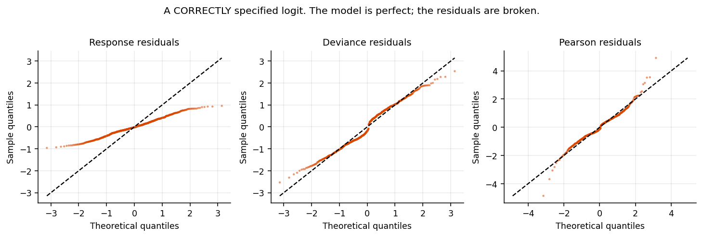
This model is correctly specified. The data were simulated from exactly the logit that was fitted. Every one of these plots says the model is broken, and every one of them is wrong.
With y ∈ {0,1}, the response residual takes only two values for any fitted probability: 1−p̂ or −p̂. That's a lattice, not a distribution. Deviance and Pearson residuals just rescale the same two branches — the S-curve in the middle panel and the heavy tails on the right are structural artifacts of discreteness, not evidence of misfit.
02Randomized quantile residuals fix it
Break 3 · the probability integral transform
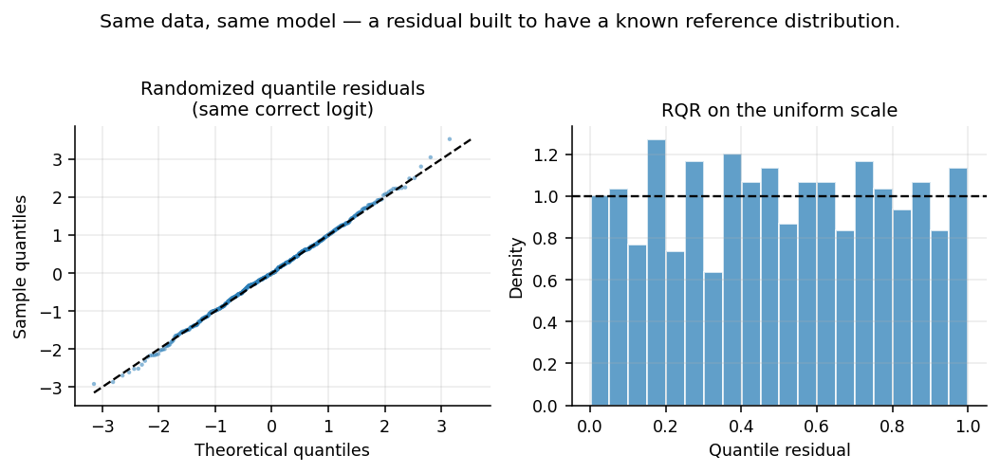
Same data. Same model. New residual. The QQ plot now tracks the line and the uniform histogram is flat — which is what a correct model is supposed to look like.
The probability integral transform: if F is the CDF of Y, then F(Y) ~ Uniform(0,1) no matter what F is, and Φ⁻¹(U) ~ N(0,1). For discrete outcomes the CDF is a step function, so we randomize within the jump: draw u ~ Uniform(F(y−1), F(y)), then take Φ⁻¹(u).
Under a correct model these are exactly standard normal — not asymptotically, exactly. Common scale, unit variance, and known reference distribution, all restored in one construction.
statmod::qresid() — deterministic given a seed, needs a closed-form CDF. Fine for any single-level GLM.DHARMa::simulateResiduals() — needs only the ability to simulate. Required for GLMMs, ZINB, hurdle, brms.03Three residuals, one correct model
Breaks 1–3 · HW1, HW6
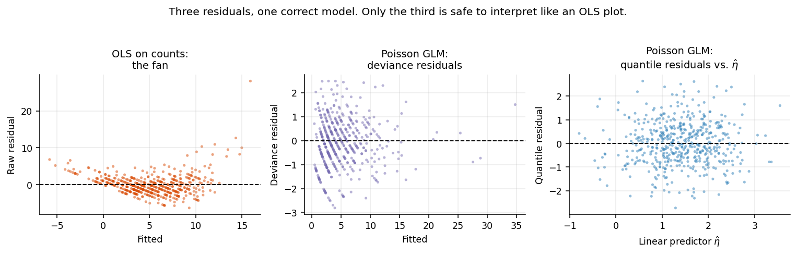
Left. OLS fitted to Poisson counts. The fan is genuine misfit — the variance really does grow with the mean and OLS assumes it doesn't.
Middle. The correctly specified Poisson GLM, deviance residuals. Flatter, because deviance residuals partly absorb the mean–variance relationship. But that wedge shape at low fitted values is structural — small counts can't produce large negative residuals. Not misfit.
Right. The same correct Poisson model, quantile residuals, plotted against the linear predictor η̂. Featureless cloud. This is the only one of the three you can read the way you'd read an OLS residual plot.
The right panel plots against η̂ = predict(mod), not μ̂ = predict(mod, type="response"). Linearity in a GLM is a claim about the link scale. Plot on the scale where the assumption lives.
04Uniformity histogram: four shapes to memorize
Break 3 · reading DHARMa output
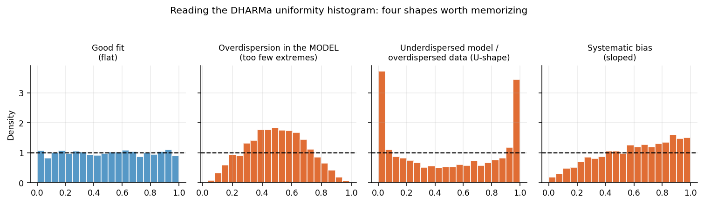
Flat. Observations are landing across the full range of what the model predicted. This is the target.
Peaked in the middle. Too few extreme observations. The model's predictive distribution is wider than the data — an overdispersed model, or one with too much noise built in.
U-shaped. Too many observations in both tails. The model's predictive distribution is too narrow. In a count model this is the classic overdispersed-data signature: switch to negative binomial.
Sloped. Systematically more observations high (or low) than predicted. The mean structure is biased — usually a missing predictor or a wrong link.
A DHARMa residual of 0.5 means the observation fell dead center of the simulated distribution. 0.99 means it was larger than 99% of what the model simulated. Flat means the observations land everywhere they should.
Job 1 — is the distribution right?
06Overdispersion
Break 2 · the variance function · HW6, HW7
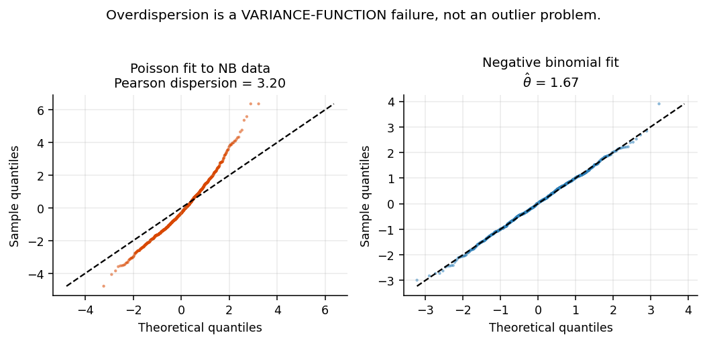
An S-curve with heavy tails on both ends: the observations are more extreme, in both directions, than the fitted Poisson can generate. Pearson dispersion is 3.20 when it should be 1. On the uniformity histogram this shows up as the U-shape from panel 04.
Overdispersion doesn't bias the coefficients much. It makes the standard errors too small by roughly √φ̂ — so with φ̂ = 3.20, every SE in the model is off by a factor of about 1.8, in the anticonservative direction. Every p-value is wrong.
performance::check_overdispersion() for a reportable statistic; DHARMa::testDispersion() for the visual; the quasipoisson φ̂ for a sense of scale.07The variance-to-mean trap
Break 2 · a diagnostic that is simply wrong
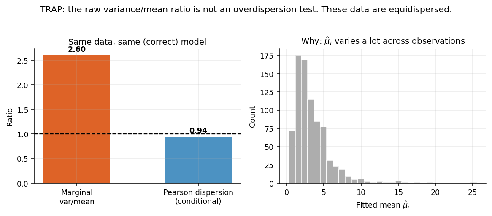
These data are exactly Poisson given X. I simulated them that way. The raw variance-to-mean ratio of the outcome is 2.60 — which looks like severe overdispersion and isn't. The conditional (Pearson) dispersion is 0.94, which is correct.
By the law of total variance, for a Poisson GLM: Var(Y) = E[μ] + Var(μ). That second term is variation in the fitted mean across observations — it's your covariates doing their job. The right-hand histogram shows how much μ̂ᵢ ranges here. Comparing marginal variance to marginal mean folds covariate-driven signal into what you're calling "dispersion."
The stronger your predictors, the more misleading the raw ratio gets. Taken seriously, it would also mean a ratio near 1 with strong covariates is evidence of underdispersion.
var(y)/mean(y) to 1 and call it an overdispersion test.check_overdispersion(), the quasipoisson φ̂, or testDispersion().08Excess zeros — the hanging rootogram
Break 2 · HW7
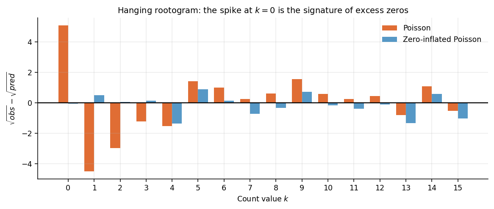
Each bar is √(observed) − √(predicted) for one count value. A bar hanging below the line means the model underpredicts that count; above means it overpredicts. A well-fitting model gives bars that hover near zero across the whole range.
The Poisson (orange) misses badly at k=0 and compensates by overpredicting k=1 through k=4. The ZIP (blue) tracks the observed distribution throughout. That specific pattern — a deficit at zero paired with a surplus at the low positive counts — is the signature of excess zeros.
You can have excess zeros without general overdispersion, and overdispersion without excess zeros. Test for both, separately: check_zeroinflation() and testZeroInflation().
ZIP vs. hurdle is theoretical. Zero-inflation says some units are structurally "always-zero" types mixed in with units that just happened to draw a zero. Hurdle says all zeros come from one gate. Ask which story is true in your application; Vuong is evidence, not a decision rule.
Job 2 & 3 — the linear predictor and individual cases
05A missing nonlinear term
Break 1 · linearity on the link scale · HW4
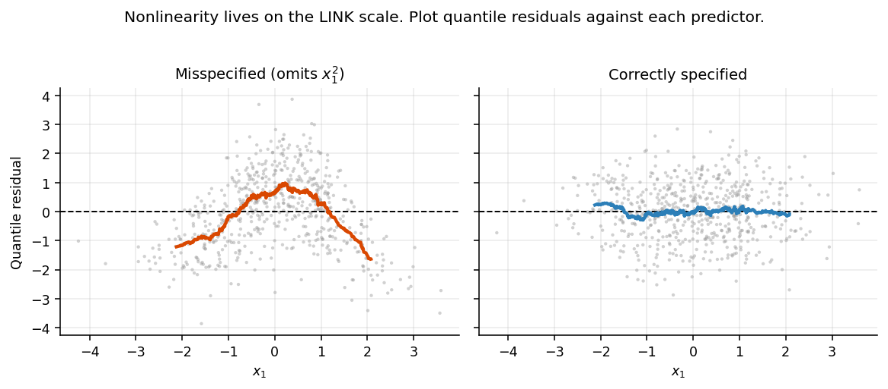
A smooth, systematic arc in the residuals against one predictor. An inverted U (or U) centered near zero is the classic missing-quadratic pattern. The correctly specified model on the right shows the smoother tracking flat across the whole range of x₁.
The overall QQ plot will tell you that something is wrong. It won't tell you where. Plot residuals against each predictor in turn — the panel that curves is the variable that needs work. DHARMa::plotResiduals(sim, form = dat$x), or testQuantiles() for a formal version.
mgcv::gam(y ~ s(x1) + s(x2), family = poisson). If the smooth looks like a line, your linear specification is fine. If it curves, it tells you what shape to reach for.I(x^2), splines::ns(x, df=3), or log(x). Confirm with an LRT. Fit the parametric model for inference — the GAM was the diagnostic.09An influential observation
Break 3 · Job 3 · HW2, HW4, HW7
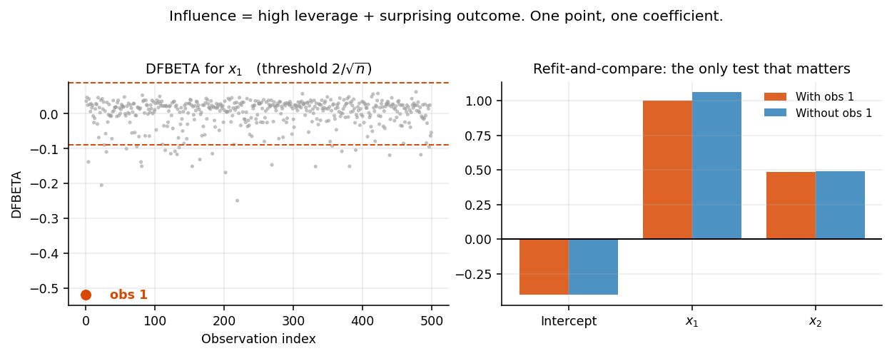
Outlier in Y — far from prediction. Leverage — extreme in X-space. Influence — removing it changes the answer. Only the third one matters, and it's typically high leverage plus a surprising outcome. Observation 1 here has x₁ = 4.5 and an outcome of 0 when the model expects 1.
Quantile-residual QQ plot to find candidates → cooks.distance() to rank overall influence (the 4/n line is a convention; what matters is separation from the pack) → dfbetas() to see which coefficient and in which direction → refit without it and compare. That last step is the only dispositive one.
10Outlier masquerading as nonlinearity
Break 3 · why the order matters · HW3 Tangent 1, HW4
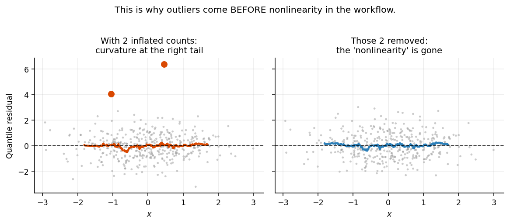
Left panel: a clear upward bend in the smoother at the right tail. Every instinct says "add a quadratic term." Right panel: the same model with two inflated counts removed. The curvature is gone. There was never any nonlinearity.
A genuine outlier at an extreme x pulls β̂, which bends the residual curve and looks like nonlinearity. Genuine nonlinearity produces a cluster of large same-signed residuals at the extremes of x, which looks like a pile of outliers.
The tell: many flagged points, all the same direction, at one end of a predictor's range → suspect nonlinearity. A few points in different directions → suspect genuinely extreme cases.
Outliers first, then nonlinearity, then loop back. The local explanation is cheap to rule out and can dissolve the global one. The reverse isn't true — adding x² to accommodate one leverage point is how you end up with a term you can't defend. Going around twice isn't p-hacking; it's what understanding your data looks like.
Structural assumptions and clustering
11A proportional odds violation
Break 4 · HW3, HW4, HW10
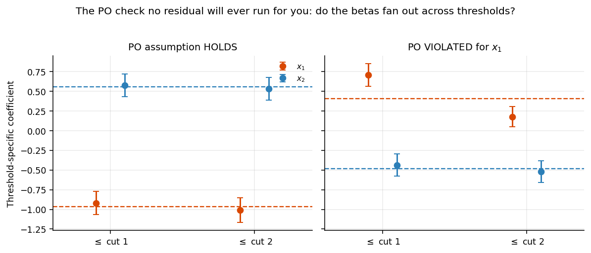
No residual will ever catch this. Your DHARMa plots can be immaculate while the proportional odds assumption is badly violated. PO is a structural claim about the link, not a distributional claim about the errors, so it needs its own test. Same for IIA in multinomial models.
Fit the unconstrained model (a GOL, or separate binary logits at each cumulative threshold) and plot the threshold-specific coefficients against the PO estimate (dashed line). Clustering around the line = the assumption holds. Fanning out = violated.
Left: both predictors sit on their reference lines at both thresholds. Right: x₁ is roughly 0.70 at the first threshold and 0.17 at the second, with non-overlapping intervals. The single PO coefficient is a weighted average that hides where the action is. x₂ is fine in both panels.
ordinal::nominal_test() (LR-based) and brant::brant() (Wald-based). Look at the per-predictor rows, not just the omnibus. When they disagree, believe the LR test — Brant inherits the Hauck-Donner problem.12Two levels of residual
Break 5 · HW8, HW9, HW10
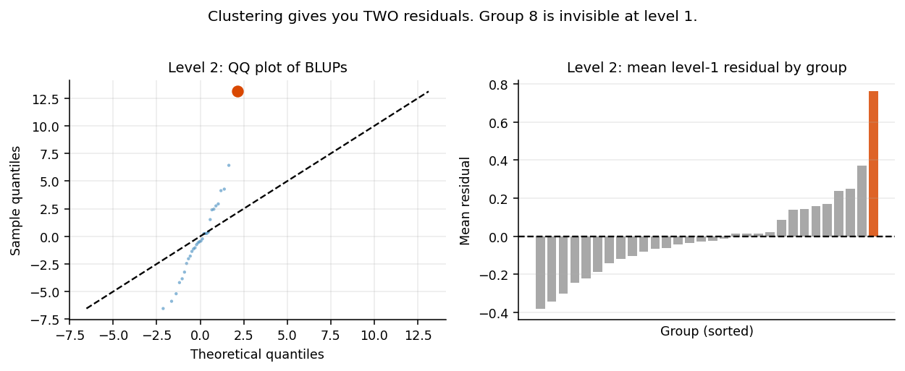
Level 1 — observation-level residuals. Is the fixed-effect specification right? Use DHARMa; for a GLMM the simulation marginalizes over the random effects automatically.
Level 2 — the BLUPs ûⱼ. Is the random-effects structure right? Do any whole groups behave in ways the model doesn't anticipate?
One group here has a genuinely unusual intercept. At level 1 nothing looks wrong — the random effect absorbed it. It only surfaces when you look at the groups as groups. Almost every diagnostic function defaults to level 1, and level 2 is the one people skip.
Partial pooling shrinks BLUPs toward zero, which makes their empirical distribution look more normal than the true random effects are. The center will look fine regardless. Judge the tails — those are the groups with the most data and the least shrinkage.
ranef(mod, condVar=TRUE)) · group-aggregated DHARMa residuals (should scatter near 0.5) · mean absolute residual by group.check_singularity() · check_convergence() · the Mundlak correction for heterogeneity bias.